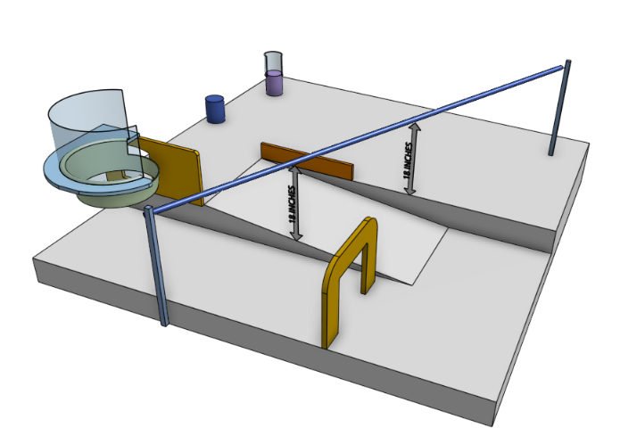
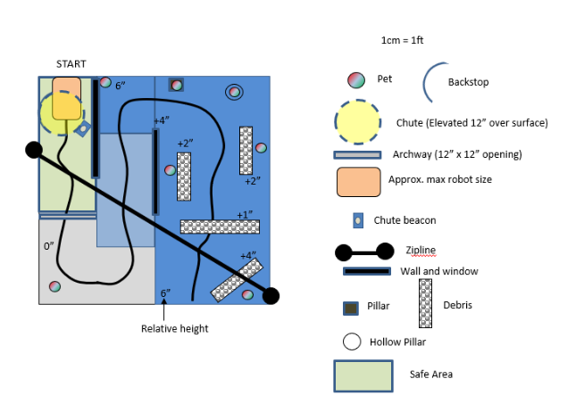
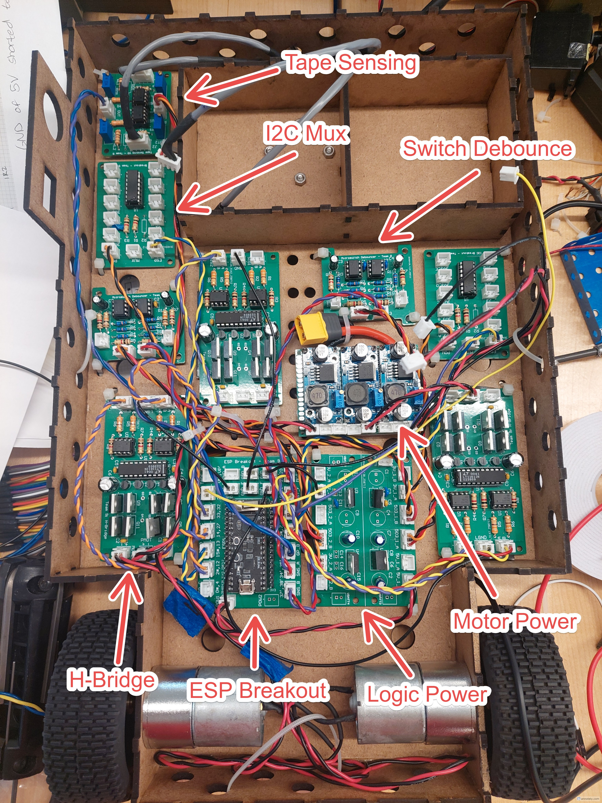
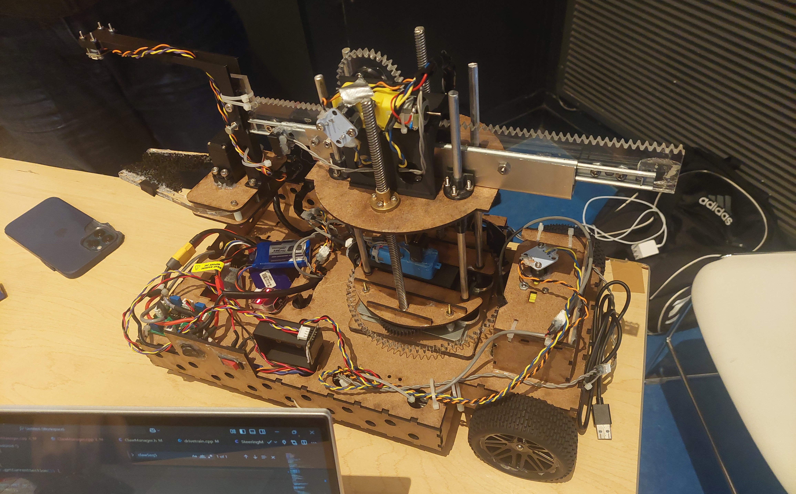
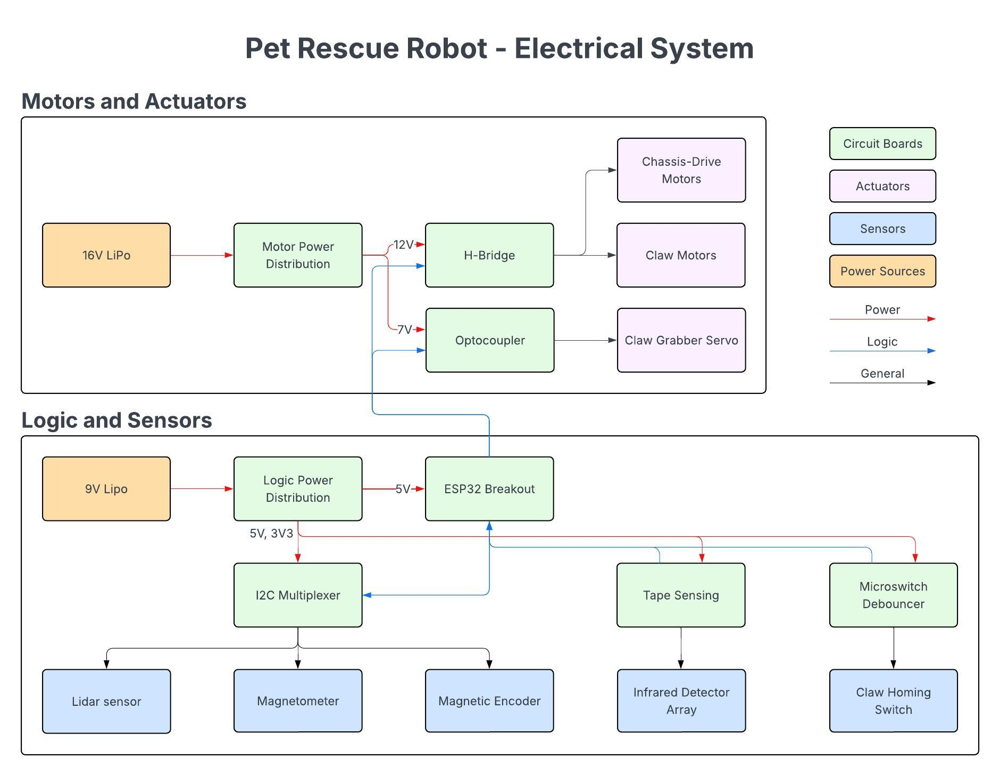

Competition Surface


Robot in Operation
Claw Testing
Continuous Servo
Electronics


For the competition, 15 teams designed fully autonomous robots to rescue pet plushies scattered across an 8 ft × 8 ft playing surface featuring ramps, elevated floors, obstacles, walls, windows, and a narrow archway. Some pets were hidden inside tubes and behind walls, adding extra sensing and navigation challenges. Each pet had a very weak magnet embedded in its head to aid with detection.
I was responsible for the robot's entire electrical system, including high-level design, electronics manufacturing and sourcing, system integration, and wiring. I also created the system-level software design and claw-related control software, and helped design various mechanical parts and sensor mounts.
As a team, reliability was our top priority, so our design philosophy focused on keeping the robot simple and executing it well. Since the challenge was very open-ended, we prioritized modularity so we could quickly try different approaches, adapt to new use cases, and swap out components if something broke. This was everyone’s first robotics competition, so our main goal was to learn as much as possible rather than worry about winning.
The robot used a two-wheel drive base with a chassis-mounted mechanical claw. The claw had three degrees of freedom: base rotation, vertical lift stage, and linear arm extension. For sensing, we used a time-of-flight LiDAR for rough positioning and obstacle awareness, and a magnetometer for fine claw alignment when locating pets. The magnetometer allowed the claw to home in on the weak embedded magnet once the robot was in the general area.
A general overview of the electrical system is as follows:

Overall, the electrical system ended up being very robust. All modules behaved as they should from initial testing through competition runs. The main issue we ran into after full system integration was I2C reliability (which I found out after reading the communication line using an oscilloscope). Some of the communication lines were simply too long (some are over a meter), which caused data corruption and erratic claw behavior.
To fix this, I shortened the I2C lines wherever possible, lowered the clock speed to 50 kHz, and increased the pull-up strength. After those changes, communication become stable and the issue did not reappear for the remainder of testing or competition.
I designed a total of eight custom PCBs to support the robot’s sensing, actuation, power distribution, and logic control:
| Board name | Description |
|---|---|
| Logic Power Regulation Board | Provides clean, regulated power for electronics used in logic and control |
| ESP32 Breakout Board | Acts as the main control hub for the ESP32 to interface with robot sensors, actuators, and other peripherals. Strapping pins' behavior during startup was considered. |
| I2C Multiplexer Board | Acts as a central I2C hub with multiplexing capability for sensors with identical addresses. |
| H-Bridge Motor Driver | Controls DC motor speed and direction. Includes optocoupler isolation on control signals to reduce noise coupling from the motor side. |
| Optocoupler Board | Decouples control signals and motor power to prevent noise coupling. |
| Tape Sensing Board | Detects tape markers on the competition surface for navigation during driving. |
| Microswitch Debouncing Board | Filters mechanical switch bounce to prevent false triggers. |
| Infrared Beacon Detector | Detects the position of an infrared-emitting beacon. This board was ultimately not used in the final design due to a strategy changes. |
Further details of each board are provided in their respective sections.
I designed the high-level software architecture for the robot, defining the core objects (we were using OOP), their responsibilities, and how they interact across sensing, control, and actuation. At a high level, the system was structured so that sensing, decision-making, and actuation were cleanly separated. This made it easier to test individual subsystems in isolation and iterate quickly as hardware changed.
To achieve accurate and repeatable arm positioning without using (expensive) off-the-shelf servos, I implemented a continuous servo using a DC motor paired with an AS5600 magnetic encoder. The encoder provided absolute angular position, which allowed me to track the wrapped angle and angular velocity in software. Control was implemented with a closed-loop PD controller, running at 50 Hz to regulate position and speed.
This system was used for precise positioning of the robot’s arm and was experimentally validated during testing:
I also developed the software used to interface directly with the claw subsystem. This included dedicated test and diagnostic routines to verify correct operation of motors and sensors, as well as tools for PID tuning. The claw software also handled homing sequences and magnetometer hard-iron calibration.
Beyond the electrical and software systems, I also contributed to several mechanical aspects of the robot. I helped with lead screw drilling and alignment, where I needed to use a mill so holes are centered. I also made 3D printable models of the mounts for claw sensors, actuators, and gear couplings.
There are several things I would improve if I were to redesign the system:
Overall, this project was a great learning experience. It was super fun to explore different design approaches, troubleshoot problems I’d never encountered before, and bring together a relatively complex autonomous system under real constraints.
I am really grateful for the opportunity to take part in that competition. I got to build something cool together with my friends and learned a lot in the process. The hands-on experience I gained throughout this project was simply priceless.


